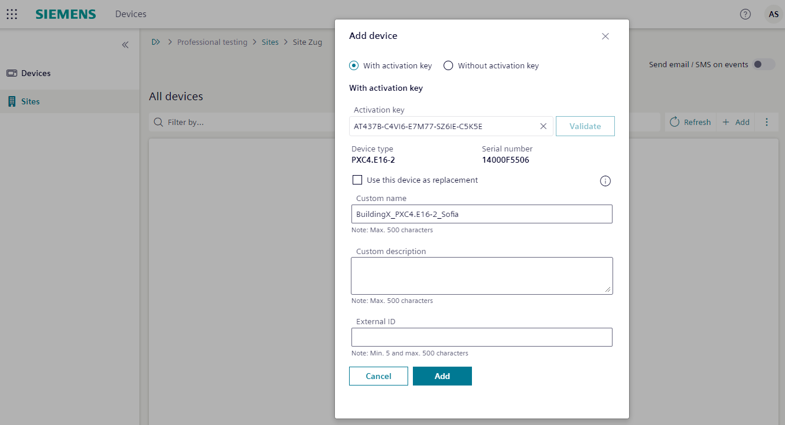

将 Desigo PXC.. 设备注册到 Building X
- Cloud connections are supported by the devices:
PXC4/5/7
PXG3.Wx00-2 - You have the activation key from ABT Site. For more information, see: Readback activation key.
- In Building X select Launchpad > Devices .
- Select Sites.
- Select the site you want to add your device.
- Select Add.
- The Add device dialog box opens.

- Do the following:
- Enter the Activation key.
Note: Each device has its own activation key. The activation key is only available if the device is configured. - Select Validate.
- (Optional) Confirm the Custom name of your device.
- (Optional) Confirm the Custom description of your device.
- (Optional) Confirm the External identifier of your device.
- Select Add.
- Repeat from step three for all devices that connect to Building X.